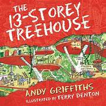
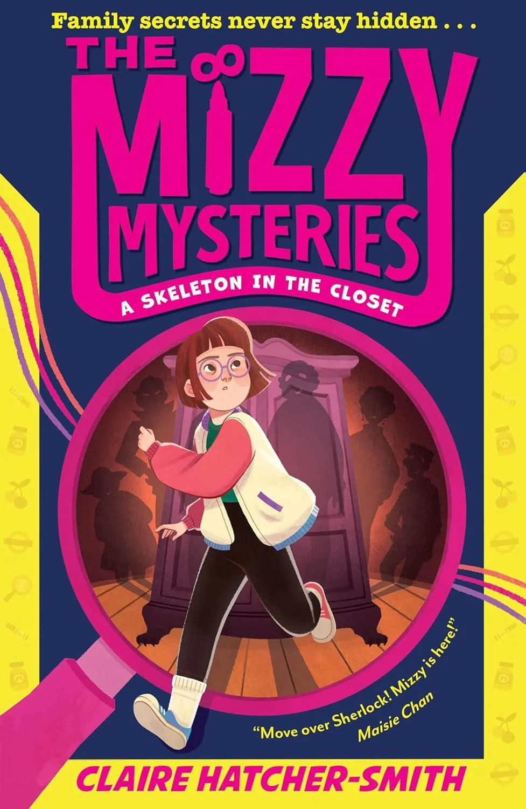

<!Doctype html>
<html></html>
<body style="background-color:lightblue;">
      
    
    <header style="background-color:red; text-align:center;font-family:'segoe ui';color:white;">
<h1>Books To Read</h1>      
    </header> 
      <div style="background-color: yellow">
     <nav style="text-align:center;font-size:30px";> <ul>
       
           <li  ><a href="index.html">Home </a> </li> 
            <li  ><a href="threetofive.html">3 to 5 years</a> </li> 
       <li  ><a href="sixtoeight.html">6 to 8 years</a> </li>       

      
      <li ><a href="12plus.html">12+ years</a> </li></ul></nav>
<h1 align="center">3 to 5 years</h1>
<table width=100% cellpadding="10" border="1">
     <tr><td align="center"><br><br>
          <b>The Treehouse Series</b> <br> <br>
         The Treehouse Series is a funny and imaginative series written by Andy Griffiths and illustrated by Terry Denton. The books follow two friends, Andy and Terry, who live in an incredible treehouse that grows by 13 new storeys in each book. Every new level is filled with crazy inventions, exciting rooms, and silly surprises, such as shark tanks, marshmallow machines, roller coasters, and giant playgrounds. 
     </td>
     <td align="center"><br><br>
<b> The MIzzy Mysteries</b></b> <br> <br>
"The Mizzy Mysteries by Claire Hatcher-Smith follows Mizzy Maypole, a determined 12-year-old girl with Down syndrome who dreams of becoming a famous detective. Although many people underestimate her, Mizzy refuses to let that stop her. In the first book, A Skeleton in the Closet, she discovers her Great Aunt Jane's old diaries and begins to suspect that her aunt's death was not natural.She starts to investigate."</td>
           <td align="center"><br><br>
          <b>Wings Of Fire</b> <br> <br>
                       
     Wings of Fire is a fantasy book series by Tui T. Sutherland about a world ruled by dragons instead of humans. The story begins with five young dragons, known as the Dragonets of Destiny, who are chosen by a prophecy to end a long and destructive war between the dragon tribes. As they leave the cave where they were raised, they discover that the world is more complicated than they expected and that they must decide whether to follow the prophecy or make their own choices. Throughout the series, the dragons face dangerous enemies, uncover hidden secrets, and form strong friendships while trying to protect their world.
     </td><td align="center">The Wild Robot .</b></td>      
      A robot named Roz learns to survive in the wilderness and forms unexpected friendships with animals.
     </td></tr>
     
</table>

      
      
      
      
      
    

